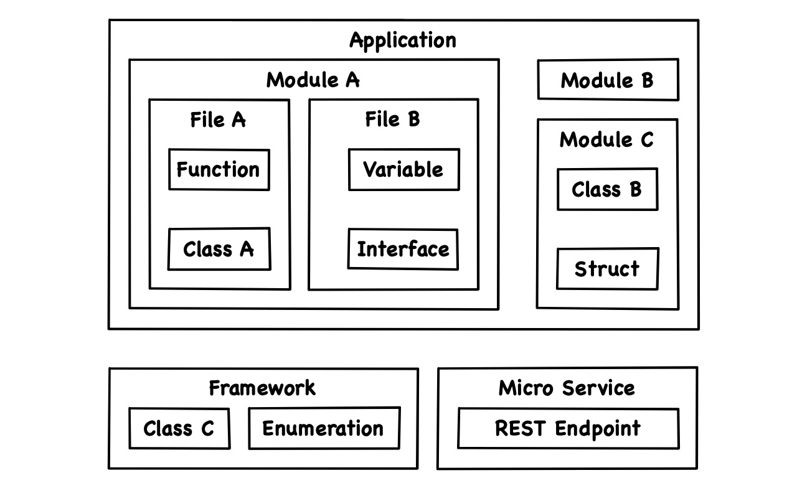
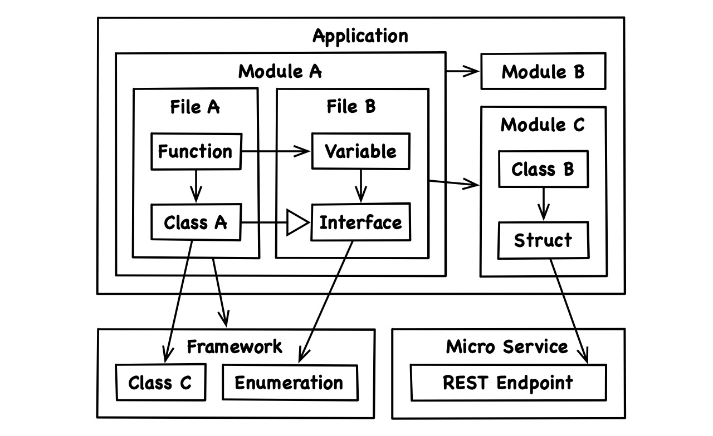
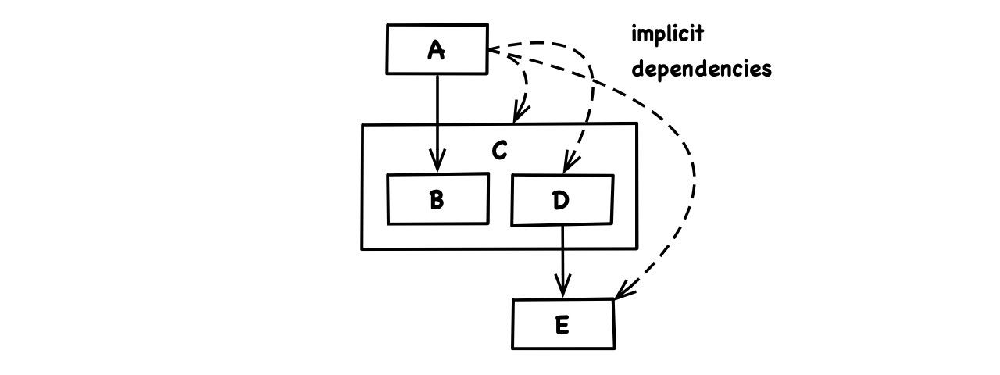
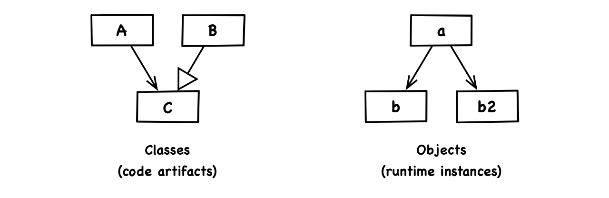
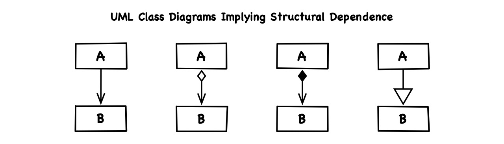
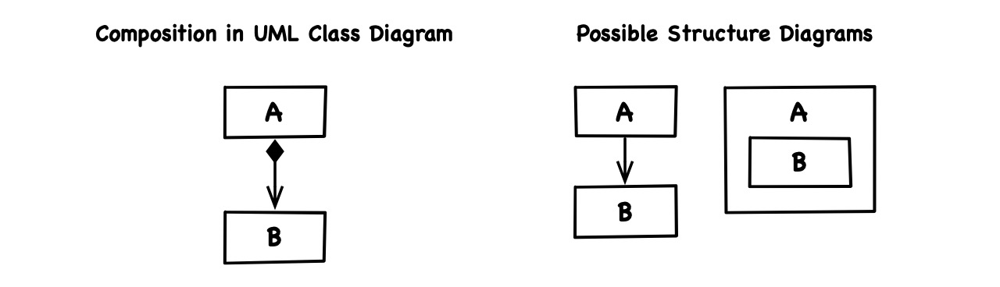
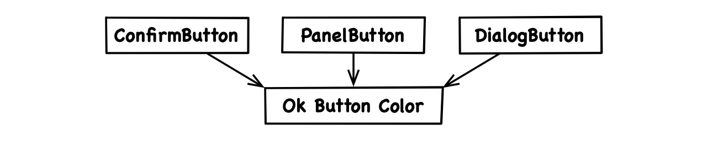

August 26, 2019 • Sebastian Fichtner
This is the second and last “axiomatic” discussion. The texts follwing this one will build more upon already introduced ideas and ultimately tie them all together.
The natural laws of life relate to its structure. The structure of a thing is defined by its elements and the relationships between them. The elements of life are atoms, organic compounds, peptides, lipids, RNA, DNA, amino acids and so forth. And how they relate to each other obviously makes all the difference.
The natural laws of code also relate to structure. So what are the elements and relationships in code?
Previously, we explored the way code conveys meaning. Here, we examine the way it is structured. To that purpose, we’re gonna put tech- and value environment aside and focus instead on the actual raw source code, its organizational units and circuitry.
And who cares about code structure? Code is never the issue anyway, it’s just those annoying people who want us to change the code all the time, right?
Requirements and technologies are in flux. For a code base to survive, it must adapt to an ever changing environment:
In the evolution of organisms and code, flexibility is resilience and rigidity is death. And that’s why structure is the central issue of such complex yet evolving systems.
Software is supposed to be soft. We rather have incorrect code that we can change easily than correct code that noone dares to touch anymore. How code is structured determines whether it meets the most essential requirement, which is maintainability, the ability to be changed. Without changes in software, there is no software development.
When we structure source code, we often think about classes and similar namespaces. And there are many more types of organizational units, at many more scales: project, application, layer, micro service, module, framework, library, package, source file, type, interface, nested type, function, property, statement, variable and more.
Depending on context, those structural elements may widely differ in size, usage and exact technical definition. But for the purpose of this analysis, we regard them as code artifacts, pieces of code that are structurally distinct, irrespective of what they mean.
A code artifact is hierarchically composed of other smaller artifacts that we might call its parts. An artifact constitutes the scope of its parts:

Aside from this scope-part relationship, code artifacts also relate to each other in more interesting ways. Think of a class that derives from an interface, or of a struct that calls a remote micro service:

All these relationships define the structure of code and are the focus of architectural principles.
We tend to associate software architecture with principles and patterns of object-oriented design. At an abstract level, all those principles, like the ADP, and patterns, like Model-View-Controller, are defined in terms of dependence. That’s because when code artifacts relate to another, they depend on another. To structure code is to manage dependencies.
In his landmark publication “Design Principles and Design Patterns”, Robert C. Martin states:
“What kind of changes cause designs to rot? Changes that introduce new and unplanned for dependencies. Each of the four symptoms mentioned above is either directly, or indirectly caused by improper dependencies between the modules of the software. It is the dependency architecture that is degrading, and with it the ability of the software to be maintained.”
As mentioned earlier, Martin’s ideas on architecture apply not only to “modules”. We may read “modules” as “code artifacts” to really grasp the universal force of dependence. And to meditate on this force should be the first step of any trip into the heights and depths of kick-ass coding.
Now how exactly does one code artifact depend on another? The two types of explicit dependence are easy to identify:
Nesting: If B is nested inside of A and so is an inherent part of A, then A explicitly depends on B:
Calling: If A directly refers to B or any of B’s interface in any form, then A explicitly depends on B:
If A and B are actually compiled together, dependence by explicit reference (calling) can also be defined like so: If we could change B in a way that would require a change of A for both to compile again, then A explicitly depends on B.
A given set of dependencies can imply that an artifact effectively, although indirectly, has another dependency, which would amount to an implicit dependency. There are two types of implicit dependence:
Transitivity: If A depends on B and B depends on C, then A implicitly depends on C:
Bundling: If A depends on a part B of C while A itself is not part of C, then A implicitly depends on C:
Bundling refers to how a code artifact C generalizes its parts in terms of incoming dependencies. This only occurs because such dependencies cross the artifact’s boundary. Since A is outside of C it has to know about C or at least require the presence of C in order to depend on any part B inside of C. Would A itself be a part of C, it could depend on any other such part, totally ignorant of the all-encompassing scope C:
Dependency bundling may sound academic but it effects practice. Think of how a source file A uses a type B declared within another file C. In most programming languages, A would have no explicit import/include/require statement for C and would thereby implicitly depend on C. Few languages like C/C++, PHP and HTML/CSS make dependencies between source files explicit.
Implicit dependence is less direct but structurally and logically just as relevant. We better not fool ourselves in thinking that techniques like layering, encapsulation, information hiding or the facade pattern would equal true decoupling. Indirection does not alter the effective dependency structure and has a comparatively cosmetic effect.
We can now describe code structure precisely as a number of hierarchically composed artifacts that depend on another. And we’ll sometimes refer to that structure as architecture.
The listed dependency types allow for some wild conclusions.
First of all, note that the parts of an artifact do not automatically depend on that artifact. In other words, an artifact does not implicitly depend on its enclosing scope. It is however possible that an artifact explicitly depends on its scope, in which case nesting creates a dependence cycle between the two:
Nesting and transitivity imply that if A depends on B, then A depends on all parts of B:
Bundling, nesting and transitivity together imply that if A depends on one part B of C, then it implicitly also depends on all other parts D of C:
And if just one of those other parts has an external dependency E, then every client A of C depends on E as well, even if A is not particularly interested in E and even if the B it is interested in doesn’t require anything from E either:

So a code artifact C bundles the outgoing dependencies of its parts as well as the incoming ones. And that’s how the four dependency types of the apocalypse together create dependency hell.
Mere code structure can be complex enough. On top of that, it is easy to confuse with two related but different perspectives:
These confusions particularly arise when we draw architecture diagrams, borrowing visual elements from UML. So let’s have a closer look at them.
When we slip into thinking about runtime, we contaminate architectural reasoning and diagrams with relationships other than structural dependence, in particular with runtime reference and information flow.
Architecture identifies and relates code artifacts rather than runtime instances. The latter are basically memory areas that applications allocate at runtime. They could be objects, which are instances of classes, or even processes, which are instances of their respective program code. Runtime instances can reference each other through memory address pointers, URLs and other mechanisms.
A runtime situation can be interesting but is only loosely related to code structure. To mix both perspectives is surprisingly tempting, so their distinction gets clouded in casual conversations and sloppy sketches, but it is profound in reality. Combining structural dependence and instance reference in the same diagram would make that diagram meaningless.
Note, that patterns of object-oriented design are defined in terms of classes, not objects. Here is a class diagram and one of many possible corresponding object diagrams:

Runtime reference doesn’t even imply type dependence. Because of polymorphism, protocols and related techniques, instance a of type A can come to reference instance b of type B without A depending on B. Think, for example, of the delegate pattern.
Also, there can be multiple runtime instances of the same code artifact. In the above diagrams, b and b2 are both supposed to be instances of B.
Information flow unfolds at runtime and is typically implicit in a sequence of runtime instances interacting with another. UML sequence diagrams are a corresponding visual language:
The instance that initiates the interaction must have a reference to the other. However, one reference alone (in the “direction of control”) is already enough to let information flow both ways. So, information flow per se tells us very little about reference direction.
Now, the real havoc sets in when we draw information flow into architecture diagrams where it isn’t even an applicable concept. After all, information flows between runtime instances, not between code artifacts.
When the distinction wasn’t as clear to me yet, I sometimes began to mark information flow in structure diagrams. Sooner or later, I got stuck because I undermined the meaningfulness of those diagrams, ultimately rendering them useless. When we conflate different levels of analysis in the same representation, we’re not thinking clearly.
The UML class diagram is a widely known modelling language that’s supposed to convey the meaning rather than the structure of code. Because there’s also an implicit assumption that meaning is more or less congruent with structure, and because our structure diagrams look like simplified UML class diagrams, it is worth clarifying the difference.
Above all, the semantics of how artifacts relate is utterly irrelevant to structural dependence itself. Whether class A calls a function of class B, has a property of type B, is intrinsically composed of properties of type B or derives itself from B doesn’t alter the fact that A depends on B. In terms of UML class diagrams, arrows signify dependence but the arrow types are irrelevant for that matter:

Also, composition in a UML class diagram describes how two concepts (from tech- or value environment) relate to another, stating that a composite consists of a component while the component cannot exist alone outside the composite. That description can be meaningful, but it tells us very little about how the actual code artifacts relate:

A must depend on B, but does it just reference B or is it the scope of its part B? Conceptual and structural composition are similar but orthogonal features. We can have each without the other.
UML offers countless variants of diagrams and all of them have their place. Just note that we don’t use UML unless explicitly stated. We just borrow some of its visual elements, like we use the inheritance arrow to mark an explicit dependence more specifically as a type inheritence or interface/protocol conformance:
The confusion between structure and meaning goes beyond UML.
Imagine having multiple button classes in a codebase. Now the designer decides that Ok buttons ought to be green, so the developer goes and sets the color in all button classes that use the title “Ok”:
Doesn’t that introduce dependencies between those classes? After all, if we now change one Ok button’s color, we’d have to adjust all other Ok buttons.
What if the designer would suddenly declare that all buttons are actually unique and could have different colors? Now the green button colors would stop being dependencies. How can a dependency in code fluctuate with the mood of the designer?
This is not real dependence. None of the button classes reference or contain another. Whether we “must” change the other buttons when we change one of them depends entirely on our idea of the design and, thereby, on the value environment. So is an Ok button or at least an Ok button color a real concept or not?
The problem of having to adjust all the button colors arises when we think the concept of an Ok button color exists while we don’t express it in code, which means we’re lying. Would the concept exist in code as well, there would be only one place to change it:

Producing untrue code is not the same as introducing dependencies. It relates to architecture in so far as it violates the principle that code expresses value- and tech environment and that effective code would rather tell the truth. This provides a glimpse of how meaning should determine structure, and we’ll tie those two ideas together in our next discussion.